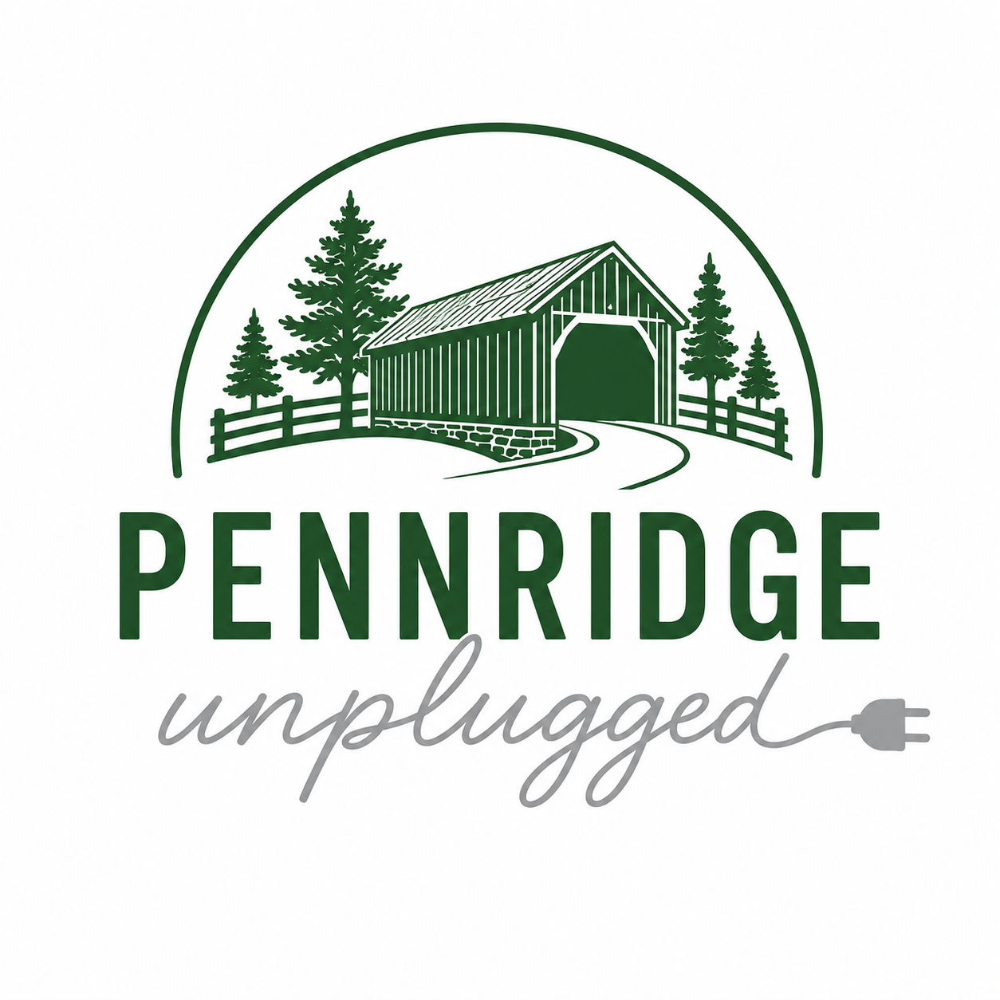

Helping families reclaim childhood.
A community of Pennridge-area parents working together to delay smartphones, reduce screen time, and give our kids the childhood they deserve.
Across the Pennridge area, parents are having the same conversation: smartphones and social media are hurting our kids. The research is clear — rising anxiety, depression, sleep disruption, and lost childhood experiences are all linked to early and excessive screen use.
But it's hard to go it alone. When every other kid has a smartphone, saying "not yet" feels impossible.
That's why Pennridge Unplugged exists. We're stronger together. When families in our community commit to delaying smartphones and setting healthy screen boundaries, no child has to feel like the odd one out.
Join other Pennridge families in the Wait Until 8th pledge to delay smartphones until at least 8th grade.
Get updates on local meetups, resources, and school-specific efforts across the Pennridge School District.
Connect with like-minded parents in your neighborhood and your child's school.
Sign up to join Pennridge Unplugged and connect with families in your area. We'll keep you posted on local events, resources, and ways to make a difference in our schools and community.